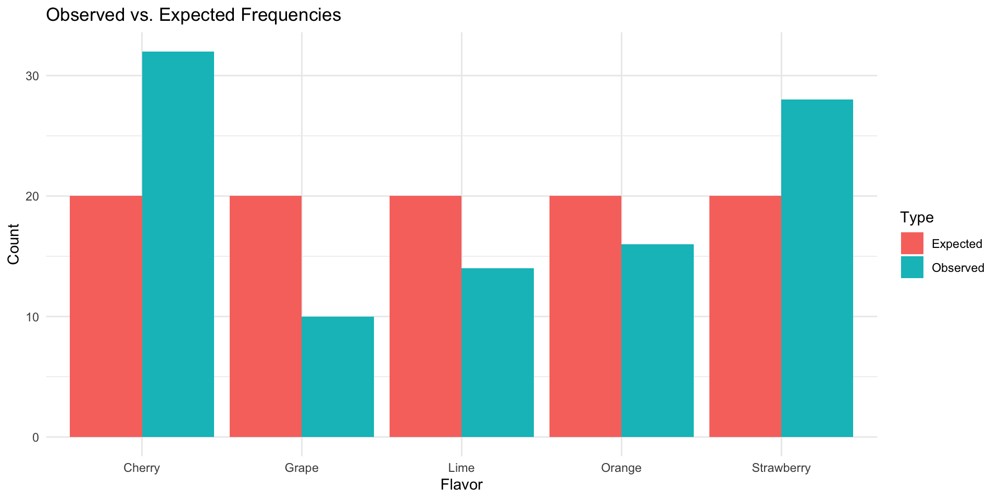

chi-square = 18 Critical value = 9.488 P-value = 0.001234 Decision: Reject H0 Chapter 11: Other Chi-Square Tests
Shih Chien University
2026-06-04
The chi-square distribution has several important applications beyond testing a single variance:
All three tests use the same chi-square statistic and are always right-tailed.
Note
The chi-square goodness-of-fit test compares observed frequencies with expected frequencies to determine whether a distribution follows a specific pattern.
\chi^2 = \sum \frac{(O - E)^2}{E}
Assumptions: 1. Data are from a random sample 2. Expected frequency for each category ≥ 5
The test is always right-tailed (small χ² → good fit; large χ² → poor fit).
Tip
A market analyst surveys 100 people about their preference among five flavors of a new fruit soda. If there is no preference, each flavor should be equally popular. The results are:
| Flavor | Cherry | Strawberry | Orange | Lime | Grape |
|---|---|---|---|---|---|
| Observed | 32 | 28 | 16 | 14 | 10 |
| Expected | 20 | 20 | 20 | 20 | 20 |
At α = 0.05, is there enough evidence to reject the claim that consumers show no preference?
Step 1: H₀: Consumers show no preference (claim) H₁: Consumers show a preference
Step 2: d.f. = 5 − 1 = 4; CV = 9.488
Step 3: \chi^2 = \frac{(32-20)^2}{20} + \frac{(28-20)^2}{20} + \frac{(16-20)^2}{20} + \frac{(14-20)^2}{20} + \frac{(10-20)^2}{20} = \frac{144}{20} + \frac{64}{20} + \frac{16}{20} + \frac{36}{20} + \frac{100}{20} = 7.2 + 3.2 + 0.8 + 1.8 + 5.0 = \boxed{18.0}
Step 4: 18.0 > 9.488 → Reject H₀
Step 5: There is sufficient evidence to conclude that consumers show a preference for certain flavors.
chi-square = 18 Critical value = 9.488 P-value = 0.001234 Decision: Reject H0 # Visualize
df_plot <- data.frame(
Flavor = c("Cherry","Strawberry","Orange","Lime","Grape"),
Observed = observed, Expected = expected)
df_long <- pivot_longer(df_plot, -Flavor, names_to = "Type", values_to = "Count")
ggplot(df_long, aes(x = Flavor, y = Count, fill = Type)) +
geom_bar(stat = "identity", position = "dodge") +
theme_minimal() + labs(title = "Observed vs. Expected Frequencies")
Tip
A survey found that after returning to work, retired executives were distributed as: 38% employed by another organization, 32% self-employed, 23% freelancing/consulting, 7% formed their own companies. A local researcher surveyed 300 executives and found: 122 working for another company, 85 self-employed, 76 freelancing/consulting, and 17 formed their own companies. At α = 0.10, test the claim that these proportions are the same.
Step 1: H₀: Distribution is 38%/32%/23%/7% (claim) H₁: Distribution differs
Step 2: d.f. = 4 − 1 = 3; CV = 6.251
Step 3: Expected frequencies: 0.38×300 = 114; 0.32×300 = 96; 0.23×300 = 69; 0.07×300 = 21
\chi^2 = \frac{(122-114)^2}{114} + \frac{(85-96)^2}{96} + \frac{(76-69)^2}{69} + \frac{(17-21)^2}{21} = 0.561 + 1.260 + 0.710 + 0.762 = \boxed{3.293}
Step 4: 3.293 < 6.251 → Do not reject H₀
Step 5: There is not enough evidence to conclude that the local distribution differs from the national survey.
Expected: 114 96 69 21 chi-square = 3.2939 Critical value = 6.251 P-value = 0.3485 Decision: Do not reject H0 Tip
A researcher read that firearm-related deaths for people aged 1–18 are distributed as: 74% accidental, 16% homicides, 10% suicides. In her district, there were 68 accidental deaths, 27 homicides, and 5 suicides (total = 100) during the past year. At α = 0.10, test the claim.
Step 1: H₀: Deaths are 74% accidental, 16% homicides, 10% suicides (claim) H₁: Distribution differs
Step 2: d.f. = 3 − 1 = 2; CV = 4.605
Step 3: Expected: 74, 16, 10
\chi^2 = \frac{(68-74)^2}{74} + \frac{(27-16)^2}{16} + \frac{(5-10)^2}{10} = 0.486 + 7.5625 + 2.5 = \boxed{10.549}
Step 4: 10.549 > 4.605 → Reject H₀
Step 5: There is enough evidence to reject the claim that the distribution in this district matches the national pattern.
chi-square = 10.549 Critical value = 4.605 P-value = 0.0051 Decision: Reject H0 Tip
Use the chi-square goodness-of-fit test to determine if the following frequency distribution is normally distributed. Use α = 0.05.
| Boundaries | Frequency |
|---|---|
| 89.5–104.5 | 24 |
| 104.5–119.5 | 62 |
| 119.5–134.5 | 72 |
| 134.5–149.5 | 26 |
| 149.5–164.5 | 12 |
| 164.5–179.5 | 4 |
| Total | 200 |
Compute \bar{X} = 24680/200 = 123.4 and s = 17.03
Compute z-scores and areas for each boundary, then multiply by n = 200:
| Interval | Area | E | O |
|---|---|---|---|
| Below 104.5 | 0.1335 | 26.7 | 24 |
| 104.5–119.5 | 0.2755 | 55.1 | 62 |
| 119.5–134.5 | 0.3332 | 66.64 | 72 |
| 134.5–149.5 | 0.1948 | 38.96 | 26 |
| Above 149.5 | 0.0630 | 12.6 | 16 (combined last two) |
\chi^2 = \frac{(24-26.7)^2}{26.7} + \frac{(62-55.1)^2}{55.1} + \frac{(72-66.64)^2}{66.64} + \frac{(26-38.96)^2}{38.96} + \frac{(16-12.6)^2}{12.6} \approx \boxed{6.797}
d.f. = 5 − 1 − 2 = 2 (−2 for estimating μ and σ); CV = 5.991
Reject H₀ — the variable is not normally distributed at α = 0.05.
# Data
boundaries <- c(89.5, 104.5, 119.5, 134.5, 149.5, 164.5, 179.5)
observed <- c(24, 62, 72, 26, 12, 4)
n <- 200
xbar <- 123.4; s <- 17.03
# Compute expected frequencies via normal distribution
z_vals <- (boundaries - xbar) / s
areas <- diff(pnorm(z_vals))
# Combine last two categories (E < 5)
obs_comb <- c(observed[1:4], sum(observed[5:6]))
exp_comb <- c(areas[1:4] * n, sum(areas[5:6]) * n)
chi2 <- sum((obs_comb - exp_comb)^2 / exp_comb)
df <- length(obs_comb) - 1 - 2 # -2 for estimated mu and sigma
cv <- qchisq(0.95, df)
cat("Expected:", round(exp_comb, 2), "\n")Expected: 22.06 55.18 66.66 38.92 12.44 chi-square = 6.7487 d.f. = 2 Critical value = 5.991 Decision: Reject H0 — NOT normally distributed Note
A contingency table (R × C table) cross-classifies data from two categorical variables.
Two chi-square tests use contingency tables:
Both use the same formulas:
E = \frac{\text{(row sum)} \times \text{(column sum)}}{\text{grand total}}, \quad \chi^2 = \sum \frac{(O-E)^2}{E}
d.f. = (R-1)(C-1)
Assumption: All expected cell frequencies ≥ 5.
When testing whether two variables are independent:
Rejecting H₀ means the variables are related — but it does not specify the direction of the relationship.
The test is always right-tailed.
Tip
A researcher examines whether the type of hospital infection is related to which hospital it occurred in. Data for 582 total infections across 3 hospitals:
| Hospital | Surgical Site | Pneumonia | Bloodstream | Total |
|---|---|---|---|---|
| A | 41 | 27 | 51 | 119 |
| B | 36 | 3 | 40 | 79 |
| C | 169 | 106 | 109 | 384 |
| Total | 246 | 136 | 200 | 582 |
At α = 0.05, test the claim that infection type depends on hospital.
Step 1: H₀: Infection type is independent of hospital H₁: Infection type depends on hospital (claim)
Step 2: d.f. = (3−1)(3−1) = 4; CV = 9.488
Step 3: Expected values (E = row×col/grand): E_{A,\text{Surg}} = \frac{119 \times 246}{582} = 50.30, \quad E_{B,\text{Pneu}} = \frac{79 \times 136}{582} = 18.46, \quad \ldots
\chi^2 = \frac{(41-50.30)^2}{50.30} + \frac{(27-27.81)^2}{27.81} + \frac{(51-40.89)^2}{40.89} + \cdots \approx \boxed{30.698}
Step 4: 30.698 > 9.488 → Reject H₀
Step 5: There is sufficient evidence that infection type is related to the hospital where it occurred.
chi-square = 30.6962 d.f. = 4 P-value = 4e-06 Decision: Reject H0
Expected frequencies: Surgical Pneumonia Bloodstream
A 50.30 27.81 40.89
B 33.39 18.46 27.15
C 162.31 89.73 131.96Tip
A researcher examines whether alcohol consumption level is related to gender. A sample of 68 people yielded:
| Gender | Low | Moderate | High | Total |
|---|---|---|---|---|
| Male | 10 | 9 | 8 | 27 |
| Female | 13 | 16 | 12 | 41 |
| Total | 23 | 25 | 20 | 68 |
At α = 0.10, test whether alcohol consumption depends on gender.
Step 1: H₀: Alcohol consumption is independent of gender H₁: Consumption depends on gender (claim)
Step 2: d.f. = (2−1)(3−1) = 2; CV = 4.605
Step 3: Expected values: E_{\text{Male, Low}} = \frac{27 \times 23}{68} = 9.13, \quad E_{\text{Male, Mod}} = \frac{27 \times 25}{68} = 9.93, \quad \ldots
\chi^2 = \frac{(10-9.13)^2}{9.13} + \frac{(9-9.93)^2}{9.93} + \frac{(8-7.94)^2}{7.94} + \frac{(13-13.87)^2}{13.87} + \cdots \approx \boxed{0.283}
Step 4: 0.283 < 4.605 → Do not reject H₀
Step 5: There is not enough evidence to conclude that alcohol consumption is related to gender.
chi-square = 0.2809 d.f. = 2 P-value = 0.869 Decision: Do not reject H0
Expected frequencies: Low Moderate High
Male 9.13 9.93 7.94
Female 13.87 15.07 12.06Note
The homogeneity test determines whether proportions are equal across multiple independently sampled populations.
Computational procedure is identical to the independence test — same formula for E and χ².
Key distinction: Independence test → one sample, two variables; Homogeneity test → multiple samples, one variable.
Tip
A psychologist selects 100 people from each of four income groups and asks whether they are “very happy.” Results:
| <$30K | $30K–$74.9K | $75K–$99.9K | ≥$100K | Total | |
|---|---|---|---|---|---|
| Yes | 24 | 33 | 38 | 49 | 144 |
| No | 76 | 67 | 62 | 51 | 256 |
| Total | 100 | 100 | 100 | 100 | 400 |
At α = 0.05, test the claim that happiness proportions are the same across income groups.
Step 1: H₀: p₁ = p₂ = p₃ = p₄ (claim) H₁: At least one proportion differs
Step 2: d.f. = (2−1)(4−1) = 3; CV = 7.815
Step 3: Since each column total = 100 and “Yes” total = 144: E_{\text{Yes, col}} = \frac{144 \times 100}{400} = 36, \quad E_{\text{No, col}} = \frac{256 \times 100}{400} = 64 \quad \text{(for each column)}
\chi^2 = \frac{(24-36)^2}{36} + \frac{(33-36)^2}{36} + \frac{(38-36)^2}{36} + \frac{(49-36)^2}{36} + \frac{(76-64)^2}{64} + \frac{(67-64)^2}{64} + \frac{(62-64)^2}{64} + \frac{(51-64)^2}{64} = 4 + 0.25 + 0.111 + 4.694 + 2.25 + 0.141 + 0.063 + 2.641 = \boxed{14.149}
Step 4: 14.149 > 7.815 → Reject H₀
Step 5: There is sufficient evidence that happiness proportions differ across income groups.
chi-square = 14.1493 d.f. = 3 P-value = 0.002709 Decision: Reject H0
Expected frequencies: <30K 30-74.9K 75-99.9K >=100K
Yes 36 36 36 36
No 64 64 64 64| Test | When to Use | d.f. | Formula |
|---|---|---|---|
| Goodness of Fit | Single sample vs. hypothesized distribution | k − 1 | \chi^2 = \sum\frac{(O-E)^2}{E}, E given by proportions |
| Independence | Single sample; two categorical variables | (R−1)(C−1) | E = \frac{\text{row} \times \text{col}}{\text{total}} |
| Homogeneity | Multiple samples; one categorical variable | (R−1)(C−1) | Same as independence |
Important
All chi-square tests in this chapter are right-tailed. Expected frequencies in each cell must be ≥ 5. If not, combine categories.
Copyright notice. These teaching materials have been adapted from Bluman, A. G. (2011). Elementary statistics: A step by step approach (8th ed.). McGraw-Hill. All rights are reserved by the original authors and publishers.
Non-commercial use only. These materials are strictly intended for educational purposes and must not be used for commercial gain or profit.
Proper attribution. Any reproduction, distribution, or use of these materials must provide proper attribution to the original source.

Elementary Statistics: A Step by Step Approach